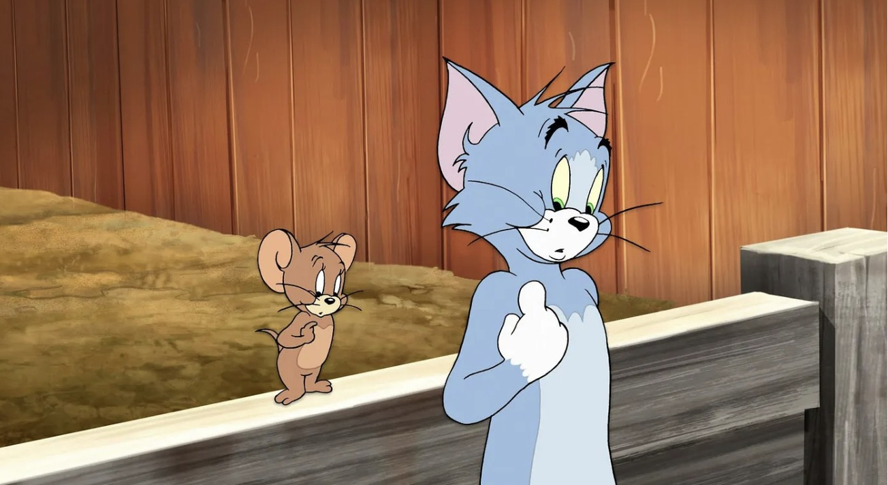

Tom and Jerry
Tom and Jerry, 1940 yılında William Hanna ve Joseph Barbera tarafından yaratılan, popüler bir çizgi film karakteridir. Tom ve Jerry, sevimli ve komik bir kedi ve fare karakteridir. Ana karakterler arasında Tom, Jerry ve diğer çeşitli karakterler bulunur.
Tom and Jerry konusu genellikle Tom ve Jerry'nin arkadaşlarıyla birlikte yaşadığı maceralar ve korku dolu olaylar etrafında döner. Tom and Jerry'nin komik davranışları ve arkadaşlarıyla olan etkileşimleri sayesinde çocuklara eğlence ve eğitimi bir arada sunar.
Sizler de bu keyifli ve eğlence dolu çizgi filmi rahatlıkla çocuklarınıza izletebilirsiniz.